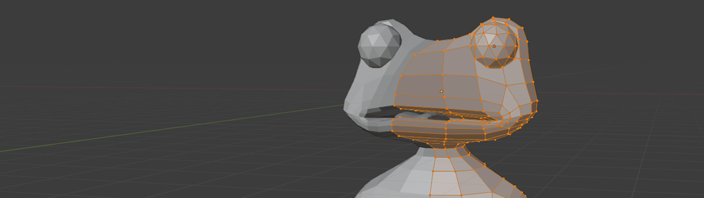

Frog Game (2022)
Frog Game is a temporary title for this project. It's a cute project where a frog eats sushi. Currently, the game doesn't really have a point in it. Randomly selected sushi are spawned in and there is a round system which increases. This base opens up a lot of possibilites for future development.
Future Plans
 The idea is to turn this into a sort of memory game. The player would be shown different sushi names in a specific order, and the player is then supposed to remember that order.
After the player is shown the correct order to eat the sushi in, the sushi start spawning in, and the player has to eat them in the correct order. This would get increasingly
difficult, as there already is a round system which spawns more sushi as the rounds get higher.
The idea is to turn this into a sort of memory game. The player would be shown different sushi names in a specific order, and the player is then supposed to remember that order.
After the player is shown the correct order to eat the sushi in, the sushi start spawning in, and the player has to eat them in the correct order. This would get increasingly
difficult, as there already is a round system which spawns more sushi as the rounds get higher.